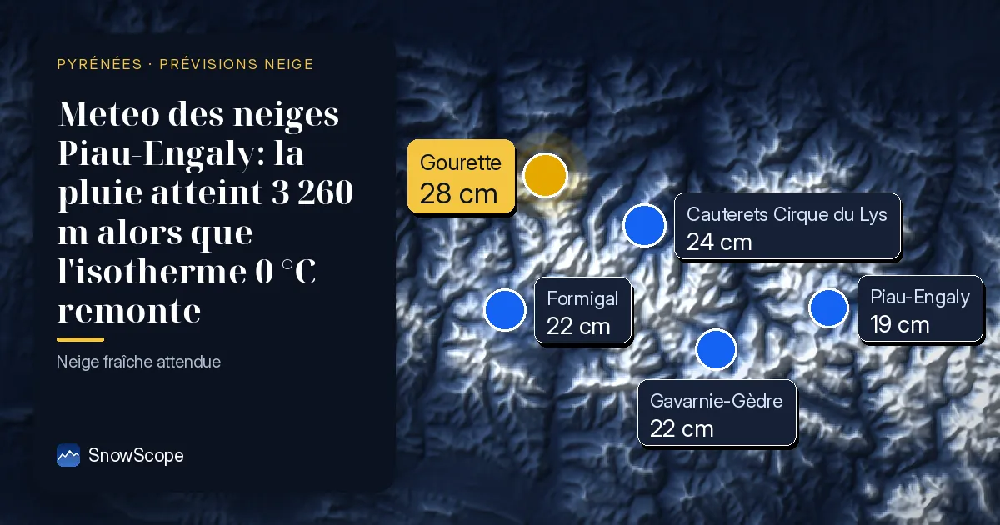

Meteo des neiges Piau-Engaly: la pluie atteint 3 260 m alors que l'isotherme 0 °C remonte
Meteo des neiges Piau-Engaly – L'isotherme 0 °C dépassera les remontées mécaniques les plus hautes des Pyrénées dès dimanche, amenant la pluie dans les zones sommitales où seule la neige tombait au début de la semaine. De la neige nouvelle tombera sur les massifs au cours des trois prochains jours, mais la quantité de neige qui atteint le sol dépend largement de la position de cette limite pluie-neige.
Consultez les prévisions neige en temps réel pour Piau-Engaly sur l'application SnowScopeHauteurs de neige, alertes poudreuse et carte 3D, gratuitement.
La pluie monte vers les hautes altitudes dès dimanche
SnowScope d'enneigement montre l'isotherme 0 °C remontant d'environ 2 400 m samedi à 3 260 m lundi. Cauterets Cirque du Lys, avec son télésiège au sommet à 2 420 m, connaîtra de la pluie plutôt que de la neige dimanche et lundi. C'est important : la pluie sur la neige existante accélère la fonte et peut déstabiliser le manteau neigeux si la couche inférieure est fragile.
La succession des événements est importante. Samedi et dimanche matin apporteront surtout de la neige sur toute la chaîne ; la chaleur arrive dimanche après-midi et lundi. Piau-Engaly, situé plus haut à 2 527 m, échappera peut-être au pire de cette pluie dimanche, mais l'isotherme 0 °C pourrait atteindre 2 800 m lundi soir.
| Station | Hauteur de neige | Neige fraîche, 72 h | Attendu, jours suivants | Sommet |
|---|---|---|---|---|
| Cauterets Cirque du Lys | 16 cm | 13 cm | 24 cm | 2 420 m |
| Gourette | 16 cm | 11 cm | 28 cm | 2 453 m |
| Piau-Engaly | 35 cm | 15 cm | 19 cm | 2 527 m |
| Formigal | 8 cm | 7 cm | 22 cm | 2 264 m |
| Gavarnie-Gèdre | 3 cm | 4 cm | 22 cm | 2 283 m |

Où la neige nouvelle s'accumulera au cours des trois prochains jours
Entre 13 et 24 cm de neige nouvelle sont prévus sur la région d'ici dimanche soir, mais la fourchette est large en raison de la zone mixte pluie-neige. La carte ci-dessous montre où cela tombe sous forme de neige par rapport à du grésil.
Gourette devrait en recevoir le plus : SnowScope estime 17 à 28 cm de neige nouvelle au sommet au cours des trois prochains jours, les chutes les plus importantes survenant samedi. Cauterets et Piau-Engaly connaîtront chacun environ 13 à 24 cm et 4 à 19 cm respectivement sur leurs pentes supérieures. Formigal, côté espagnol, commence avec une base moins profonde (8 cm aujourd'hui) mais devrait accumuler environ 14 cm au sommet d'ici dimanche soir.
Épaisseur de neige selon l'altitude : le défi de la mesure
SnowScope d'enneigement estime les épaisseurs actuelles à mi-montagne vers 2 100 m : pratiquement zéro partout.
D'ici dimanche soir, nous nous attendons à ce que les zones mi-montagne (1 900 à 2 100 m) conservent 9 à 17 cm de neige nouvelle, tandis que les sommets en accumulent 13 à 20 cm. Mais les zones de base verront de la pluie, pas de neige. À la base de Cauterets (1 725 m), seulement 1 cm de précipitations devraient tomber sous forme de neige sur sept jours ; le reste sera de la pluie.
Fiabilité et limite pluie-neige
L'incertitude des prévisions est plus importante qu'habituellement car la limite pluie-neige oscillera autour de 2 200 à 2 400 m, exactement la zone où skient beaucoup de gens. Si l'isotherme 0 °C baisse 100 m plus vite que prévu, plus de neige persiste. S'il remonte plus vite, la pluie ronge le terrain mi-montagne.
Notre fiabilité de prévision va de 13 à 24 cm au sommet de Cauterets ; de 17 à 28 cm à Gourette.
Comparaison avec les hivers passés
À 2 072 m à Cauterets, le manteau neigeux actuel (épaisseur de zéro) est plus profond que seulement 9 des 46 périodes comparables du début novembre passé. L'épaisseur habituelle à cette date est de 6 cm. La neige fraîche de cette semaine rapprochera le total de la normale, mais l'enneigement de début de saison reste mince. Tous les rochers ou terrains dénudés aux altitudes intermédiaires ne seront pas totalement ensevelis d'ici dimanche.
Ce que cela signifie pour la réserve en eau
La pluie qui tombe sur une neige mince en haute altitude accélère le ruissellement dans les cours d'eau de montagne. Si la limite pluie-neige s'établit vers 2 400 m comme prévu, l'eau atteindra les rivières et réservoirs plus rapidement que si les mêmes précipitations étaient tombées sous forme de neige froide. C'est important pour l'hydrologie de montagne : la neige persiste et alimente une fonte progressive ; la pluie se déplace vite. Attention à une montée rapide du débit des cours d'eau si la pluie de dimanche arrive comme prévu.
Conseils aux skieurs
- Restez au-dessus de 2 100 m samedi et dimanche matin pour trouver la neige nouvelle la mieux préservée avant l'arrivée de la transition pluie-neige. Sous 2 200 m, attendez-vous à des conditions mixtes et du grésil à partir de dimanche après-midi.
- Consultez les bulletins d'avalanche locaux avant de partir en hors-piste, en particulier sur les pentes raides où la transition neige-pluie crée une instabilité. De la neige fraîche s'enfonçant dans une base potentiellement fragile de début de saison est un aléa connu.
- Skiez tôt : le cycle gel-dégel commencera dès dimanche après-midi avec l'arrivée de la pluie qui réchauffera le manteau neigeux. Les premières lueurs offrent la surface la plus stable.
- Attendez-vous à une détérioration rapide sous 2 000 m dès lundi. La pluie en altitude signifie presque certainement de la pluie aux zones de base ; la fonte s'accélèrera.
À propos de ces chiffres
Les hauteurs de neige des stations sont la neige la plus épaisse sur le haut du domaine à la date indiquée ; ce sont des estimations pour une zone, pas une mesure en un point. Les prévisions peuvent changer. Consultez toujours le bulletin d'avalanche officiel avant le hors-piste.
Bulletins d'avalanche officiels: Météo-France / Meteocat / AEMET
Citer ce bulletin
Pour la recherche, l'enseignement ou la presse : chiffres et graphiques réutilisables librement sous CC BY 4.0 avec cette citation.
SnowScope (2026), Meteo des neiges Piau-Engaly: la pluie atteint 3 260 m alors que l'isotherme 0 °C remonte, https://snowscope.app/blog/fr/2026/11/pyrenees-piau-engaly-snow-forecast-20-november-2026.html, consulté le 2026-11-20
SnowScope (Atlas Labs). (2026, November 20). Meteo des neiges Piau-Engaly: la pluie atteint 3 260 m alors que l'isotherme 0 °C remonte. SnowScope snow reports. https://snowscope.app/blog/fr/2026/11/pyrenees-piau-engaly-snow-forecast-20-november-2026.html
BibTeX
@misc{snowscope2026pyreneespiauengalysnowfo,
author = {{SnowScope (Atlas Labs)}},
title = {Meteo des neiges Piau-Engaly: la pluie atteint 3 260 m alors que l'isotherme 0 °C remonte},
year = {2026},
month = nov,
howpublished = {\url{https://snowscope.app/blog/fr/2026/11/pyrenees-piau-engaly-snow-forecast-20-november-2026.html}},
note = {Published 2026-11-21 10:43 UTC; accessed 2026-11-20}
}· CC BY 4.0 · Méthodes, données et outils →
Piau-Engaly : neige et température selon l'altitude, cet hiver vs l'hiver dernier (outils) →
Suivre Piau-Engaly
Gratuit : un message quand la neige arrive, et la météo chaque matin.
Autres bulletins neige

Trois hivers maigres d'affilée ont pris fin en 2025-26 ; cet automne a commencé normalement.

Comparez Grandvalira et les stations espagnoles en décembre 2026 pour les hauteurs de neige, l'altitude des remontées et les prix à partir de 49,00 EUR.

Grandvalira est souvent vendue comme une destination pas chère en décembre, pourtant la neige naturelle à la base n'atteint en moyenne que 9 cm lors des hivers passés.